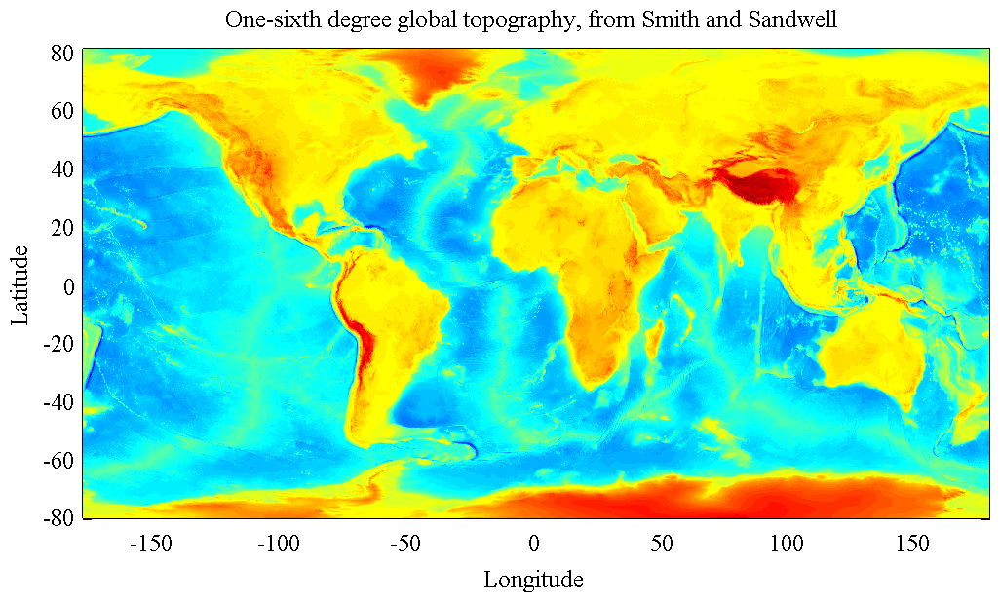

JTOPO One-sixth degree global topography based on Smith and Sandwell.
_______________________________________________________________________

_______________________________________________________________________
JTOPO is a matfile containing smoothed one-sixth degree global
topography based on the Smith and Sandwell database version 18.1.
LOAD JTOPO loads the structure JTOPO, with the following fields:
jtopo.about Pointer to this document
jtopo.lat Array of latitudes [969 x 1]
jtopo.lon Array of longitudes [1 x 2160]
jtopo.topo Matrix of topography [969 x 2160]
Typing 'use jtopo' maps these fields into variables in the current
workspace, e.g. 'use jtopo, pcolor(lon,lat,topo), shading interp'.
TOPO is in units of kilometers and is positive for above sea level,
and negative for below sea level.
The one-minute Smith and Sandwell topography database is smoothed to
one-sixth of a degree by averaging in 1/6 x 1/6 bins.
LAT is uniformly spaced from -80.666 to 80.666, and LON is uniformly
spaced from -180 to 179.8333. These are *grid-centered* values, that
is, they indicate midpoints of the topography cells.
JTOPO is distributed with JLAB, available at http://www.jmlilly.net.
See also READTOPO, which reads in any region of the Smith and Sandwell
database, and TOPOPLOT, which makes simple plots based on JTOPO.
__________________________________________________________________
Data and documentation
This dataset is based on the Smith and Sandwell Global Topography
Dataset v. 18.1, which is included with JDATA.
The original source of the Smith and Sandwell Dataset v. 18.1 is
http://topex.ucsd.edu/WWW_html/mar_topo.html
and the reference for this dataset is
Smith, W. H. F., and D. T. Sandwell, Global seafloor topography
from satellite altimetry and ship TOPO soundings, Science,
v. 277, p. 1957-1962, 26 Sept., 1997.
Note that the Smith and Sandwell database is defined for latitudes
between -80.738 and 80.738.
__________________________________________________________________
License and Copyright
JTOPO.MAT is distributed with JDATA for RESEARCH AND NON-PROFIT USE
ONLY, in accordance with the copyright statement for the Smith and
Sandwell dataset. For details, see TOPO_COPYRIGHT.
__________________________________________________________________
Dataset creation
For completeness, the m-file ABOUT_JTOPO also contains the processing
steps used in the creation of JTOPO.MAT.
If you wish to do this yourself, with JLAB on your search path,
'about_jtopo --create' will recreate the JTOPO.MAT dataset by reading
in and averaging Smith and Sandwell. This will take a while.
For this to work you will need to have the JDATA folder containing
file 'topo_18.1.img' downloaded and on your Matlab search path.
__________________________________________________________________
See also READTOPO, TOPOPLOT, JDATA.
'about_jtopo --f' generates the sample figure shown above.
Usage: about_jtopo
about_jtopo --create
__________________________________________________________________
This is part of JLAB --- type 'help jlab' for more information
(C) 2014--2015 J.M. Lilly --- type 'help jlab_license' for details